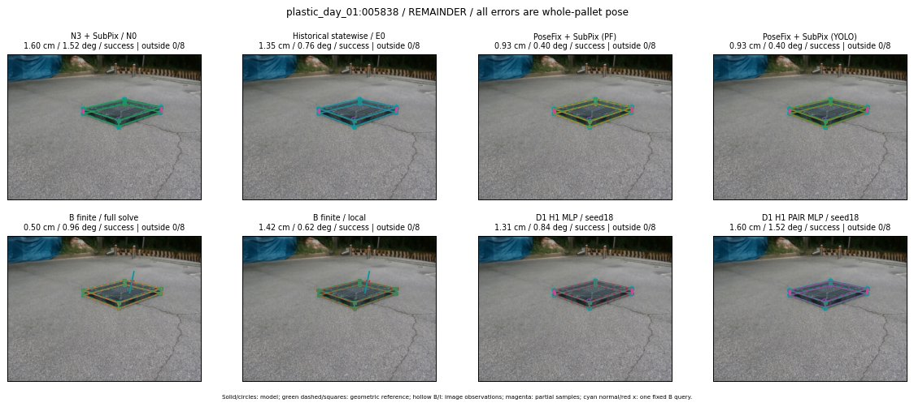

Whole-pallet pose errors; reference is a fixed geometric annotation, not certified physical GT.

Scores are uncalibrated logits. N0 retention is a numerical pose alias; it differs from H0 none or B fallback. B/I and profiles in baseline/B panels are original observations; L panels use new D1 observations. Only one deterministic supported B query is shown in a thumbnail; full support counts are below. Grey privacy rectangles edit the display copy only and are unrelated to O states; all observations were measured on original pixels. Thumbnails use JPEG quality85; detailed scientific panels are PNG.
| Method | Whole pose / cm, deg | Actual source | Selected ID | Score | Archived candidates | Eligible | N0 retained | H0 none | Fallback | Finite profiles |
|---|---|---|---|---|---|---|---|---|---|---|
| Raw YOLO + F | 4.03 cm / 1.15 deg / success | OTHER | None | N/A | N/A | N/A | False | N/A | None | N/A |
| N3 + SubPix / N0 | 1.60 cm / 1.52 deg / success | N0 | None | N/A | N/A | N/A | True | N/A | None | N/A |
| Historical statewise / E0 | 1.35 cm / 0.76 deg / success | E0_REGENERATED | None | N/A | N/A | N/A | False | N/A | False | N/A |
| PoseFix raw | 8.36 cm / 0.80 deg / failure | OTHER | None | N/A | N/A | N/A | False | N/A | None | N/A |
| PoseFix + SubPix (PF) | 0.93 cm / 0.40 deg / success | OTHER | None | N/A | N/A | N/A | False | N/A | False | historical support records 9; finite audit N/A |
| PoseFix + SubPix (YOLO) | 0.93 cm / 0.40 deg / success | OTHER | None | N/A | N/A | N/A | False | N/A | False | historical support records 9; finite audit N/A |
| Historical L, seed18 | 1.60 cm / 1.52 deg / success | N0 | N0 | N/A | 69 | 69 | True | True | True | N/A |
| Historical B fixed bank | 1.31 cm / 0.84 deg / success | OTHER | G10/ORIGINAL_WD/sample/0 | N/A | N/A | N/A | False | N/A | False | N/A |
| Historical B full | 0.49 cm / 0.95 deg / success | OTHER | NEW/B/ORIGINAL_WD/h0/G13/ORIGINAL_WD/sample/0/PROPOSED_NATIVE_YAW_0 | N/A | N/A | N/A | False | N/A | False | N/A |
| Historical edge full | 8.88 cm / 82.95 deg / failure | OTHER | NEW/edge/SWAPPED_WD/h0/G13/SWAPPED_WD/sample/0/PROPOSED_NATIVE_YAW_0 | N/A | N/A | N/A | False | N/A | False | N/A |
| Historical AB full | 0.51 cm / 0.94 deg / success | OTHER | NEW/AB/ORIGINAL_WD/h0/G13/ORIGINAL_WD/sample/0/PROPOSED_NATIVE_YAW_0 | N/A | N/A | N/A | False | N/A | False | N/A |
| B finite / fixed bank | 1.31 cm / 0.84 deg / success | OTHER | G10/ORIGINAL_WD/sample/0 | N/A | N/A | N/A | False | N/A | False | 27/27 |
| B finite / full solve | 0.50 cm / 0.96 deg / success | OTHER | NEW_FINITE/B/ORIGINAL_WD/h0/G13/ORIGINAL_WD/sample/0/PROPOSED_NATIVE_YAW_0 | N/A | N/A | N/A | False | N/A | False | 27/27 |
| B finite / local | 1.42 cm / 0.62 deg / success | OTHER | NEW_FINITE/B/ORIGINAL_WD/h0/N0_LOCAL_SAME_PHYSICAL_POSE/ORIGINAL_WD | N/A | N/A | N/A | False | N/A | False | 27/27 |
| Edge finite / full solve | 1.60 cm / 1.52 deg / success | N0 | N0 | N/A | N/A | N/A | True | N/A | False | 27/27 |
| D0 H0 MLP / seed18 | 1.60 cm / 1.52 deg / success | N0 | N0 | 4.058441638946533 | 34 | 34 | True | True | True | N/A |
| D0 H0 MLP / seed19 | 1.60 cm / 1.52 deg / success | N0 | N0 | 5.409230709075928 | 34 | 34 | True | True | True | N/A |
| D0 H0 MLP / seed20 | 1.60 cm / 1.52 deg / success | N0 | N0 | 2.7237303256988525 | 34 | 34 | True | True | True | N/A |
| D0 H1 MLP / seed18 | 1.31 cm / 0.84 deg / success | OTHER | G10/ORIGINAL_WD/selected | -0.20899522304534912 | 34 | 34 | False | False | False | N/A |
| D0 H1 MLP / seed19 | 1.31 cm / 0.84 deg / success | OTHER | G10/ORIGINAL_WD/selected | -0.6381147503852844 | 34 | 34 | False | False | False | N/A |
| D0 H1 MLP / seed20 | 1.31 cm / 0.84 deg / success | OTHER | G10/ORIGINAL_WD/selected | -1.9860152006149292 | 34 | 34 | False | False | False | N/A |
| D1 H0 MLP / seed18 | 1.60 cm / 1.52 deg / success | N0 | N0 | 7.915975570678711 | 34 | 34 | True | True | True | N/A |
| D1 H0 MLP / seed19 | 1.60 cm / 1.52 deg / success | N0 | N0 | 9.098526954650879 | 34 | 34 | True | True | True | N/A |
| D1 H0 MLP / seed20 | 1.60 cm / 1.52 deg / success | N0 | N0 | 8.162425994873047 | 34 | 34 | True | True | True | N/A |
| D1 H1 MLP / seed18 | 1.31 cm / 0.84 deg / success | OTHER | G10/ORIGINAL_WD/selected | 0.3064749240875244 | 34 | 34 | False | False | False | N/A |
| D1 H1 MLP / seed19 | 1.31 cm / 0.84 deg / success | OTHER | G10/ORIGINAL_WD/selected | 0.13380156457424164 | 34 | 34 | False | False | False | N/A |
| D1 H1 MLP / seed20 | 1.31 cm / 0.84 deg / success | OTHER | G10/ORIGINAL_WD/selected | -0.025422677397727966 | 34 | 34 | False | False | False | N/A |
| D1 H1 ROLE AFFINE / seed18 | 1.31 cm / 0.84 deg / success | OTHER | G10/ORIGINAL_WD/selected | 0.4611896574497223 | 34 | 34 | False | False | False | N/A |
| D1 H1 ROLE AFFINE / seed19 | 1.31 cm / 0.84 deg / success | OTHER | G10/ORIGINAL_WD/selected | -0.13626526296138763 | 34 | 34 | False | False | False | N/A |
| D1 H1 ROLE AFFINE / seed20 | 1.31 cm / 0.84 deg / success | OTHER | G10/ORIGINAL_WD/selected | 0.28401675820350647 | 34 | 34 | False | False | False | N/A |
| D1 H1 PAIR MLP / seed18 | 1.60 cm / 1.52 deg / success | N0 | N0 | -0.7392730116844177 | 34 | 2 | True | False | False | N/A |
| D1 H1 PAIR MLP / seed19 | 1.60 cm / 1.52 deg / success | N0 | N0 | -0.6741735935211182 | 34 | 2 | True | False | False | N/A |
| D1 H1 PAIR MLP / seed20 | 1.60 cm / 1.52 deg / success | N0 | N0 | -0.4564984142780304 | 34 | 2 | True | False | False | N/A |
| D1 H1 PAIR ROLE AFFINE / seed18 | 1.35 cm / 0.76 deg / success | E0_REGENERATED | E0_REGENERATED | -0.07592097669839859 | 34 | 2 | False | False | False | N/A |
| D1 H1 PAIR ROLE AFFINE / seed19 | 1.35 cm / 0.76 deg / success | E0_REGENERATED | E0_REGENERATED | -0.2807130515575409 | 34 | 2 | False | False | False | N/A |
| D1 H1 PAIR ROLE AFFINE / seed20 | 1.60 cm / 1.52 deg / success | N0 | N0 | -0.12029378116130829 | 34 | 2 | True | False | False | N/A |
| Regenerated common E0 | 1.35 cm / 0.76 deg / success | E0_REGENERATED | E0_REGENERATED | N/A | N/A | N/A | False | N/A | False | N/A |